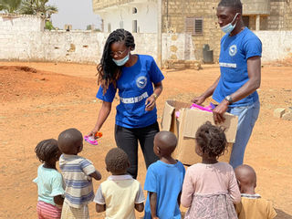
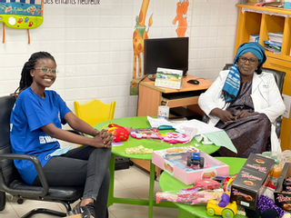
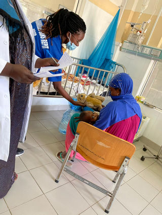
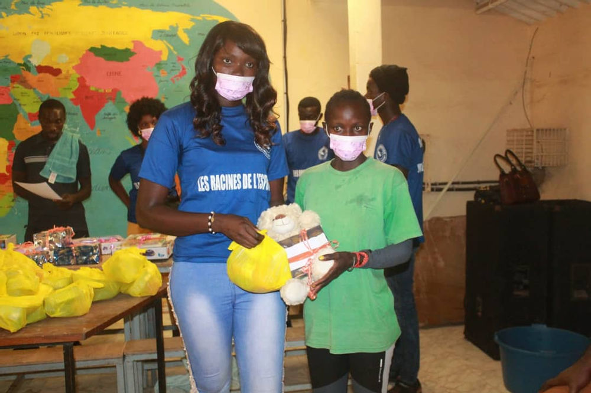
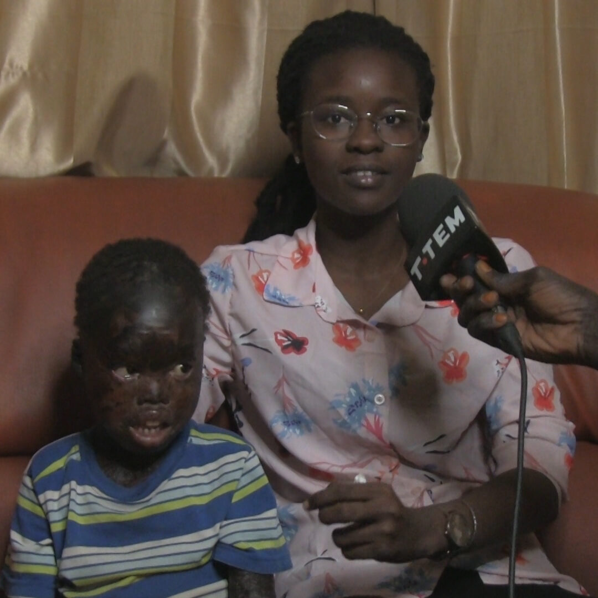
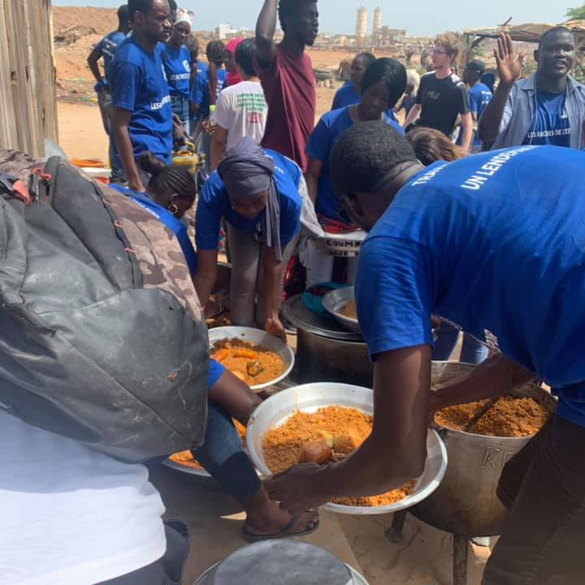
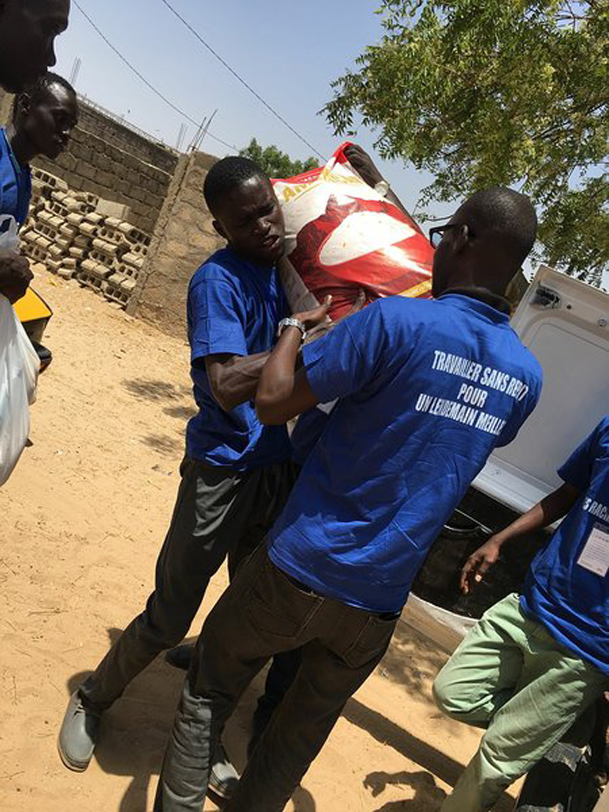
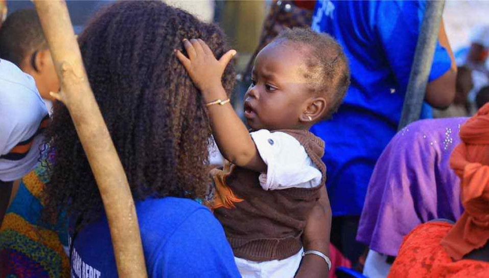

|  | Un Dimanche Magique ( dejeuner pour tous & Don dans les villages) Un dimanche magique Alhamdoulilah nous avons passé une très belle journée avec les enfants le déjeuner pour tous c’est très bien passé grâce à vous nous faisons des activités < non stop> pour redonner le sourire aux enfants et aux personnes qui sont dans le besoin. |
|---|---|
|  | Tous les membres de l’association vous disent merci vous êtes notre force c’est grâce à vous que nous sommes ce que nous sommes ,si jamais on s’aventure à citer nous risquons d’oublier certaines personnes à tout ce qui nous soutiennent Merci continuons à nous donner de la force , c’est grâce à vous Que le combat continue DIEUREDIEUF |
|  | Un petit geste peu aussi participer à un traitement. décembre magique hôpital pour enfants diamniadio Ils ont oublié leurs maladies pendants quelques heures à cause des cadeaux qui viennent du coeur qu’ils ont reçu un petit geste peu aussi participer à un traitement. Nous remercions tout le personnel de l’hôpital diamniadio particulièrement Madame Gaye , Madame Dieng et Madame sall merci encore pour tout vous êtes braves |
|  | Décembre magique ziguinchor Peu importe la situation nous les traitons avec amour et nous essayons de montrer à ces enfants qu’ils ne sont pas différents Aujourd’hui les enfants vivant avec un handicap ont reçu leurs cadeaux de noël . Nous remercions toute l’équipe de la casamance félicitations pour le travail , nous remercions aussi Mr et madame DJYBA et leur équipe qui prennent soin d’eux afin qu’ils puissent avoir un lendemain meilleur . |
|  | Ensemble nous vaincrons une maladie rare qui touche la peau de nos enfants et d’autres partie de leur corps ça fait 4 ans que nous les soutenons. ils sont a notre charge et sont au nombre de 20 un peu partout dans le pays .Certains on grandit avec nous car leur maladie est incurable pour le moment mais ce n’est pas une raison pour les laisser a leur sort nous sommes la pour eux. hier nous avons reçu cette importante donation en médicaments pour les enfants de la part De L'Amicale des anciennes de l'’IMMACULEE CONCEPTION , représentée par Mmes Camara et Dieng et c’est pas la première fois qu’ils viennent a notre secours . Madame camara |
|  | Don dans les Villages coubalan (casamance) Lou nekh dou doye ALHAMDOULILAH mission accomplie La remise de don a koubalan (village qui se situe en casamance ) c’est bien passé alhamdoulilah |
|  | Déjeuner Pour Tous Profitez de ces images du dejeuner pour tous . Un concepte que nous avons créer pour permettre aux enfants démunis de pouvoir manger un repas copieux < ils sont l’avenir du monde peu importe leurs conditions de vie , d’où ils viennent , qui ils sont , ils ont des droits comme tous nos enfants . |
|  | Visite Pouponnières ( Kaolack et Tambacounda ) Une expérience de plus pour les Racines de l’espoir qui malgré tout ce qui se dit sur cette pandémie n’ont pas hésité à se rendre dans la sous-région pour faire plaisir à ces tous ces bouts de chou ... En attendant la vidéo finale nous partageons avec vous ces quelques photos . Peu importe l’endroit où vous vous trouvez faites un petit tour dans les orphelinats ou pouponnières et montrer aux enfants qu’ils ne sont pas seul, tout comme nous ils ont besoin d’amour et d’affection. Et n’oubliez jamais que “ Personne n'est assez riche pour se passer d'un sourire, car un sourire ne peut être acheté, mendié, emprunté ni volé “ |